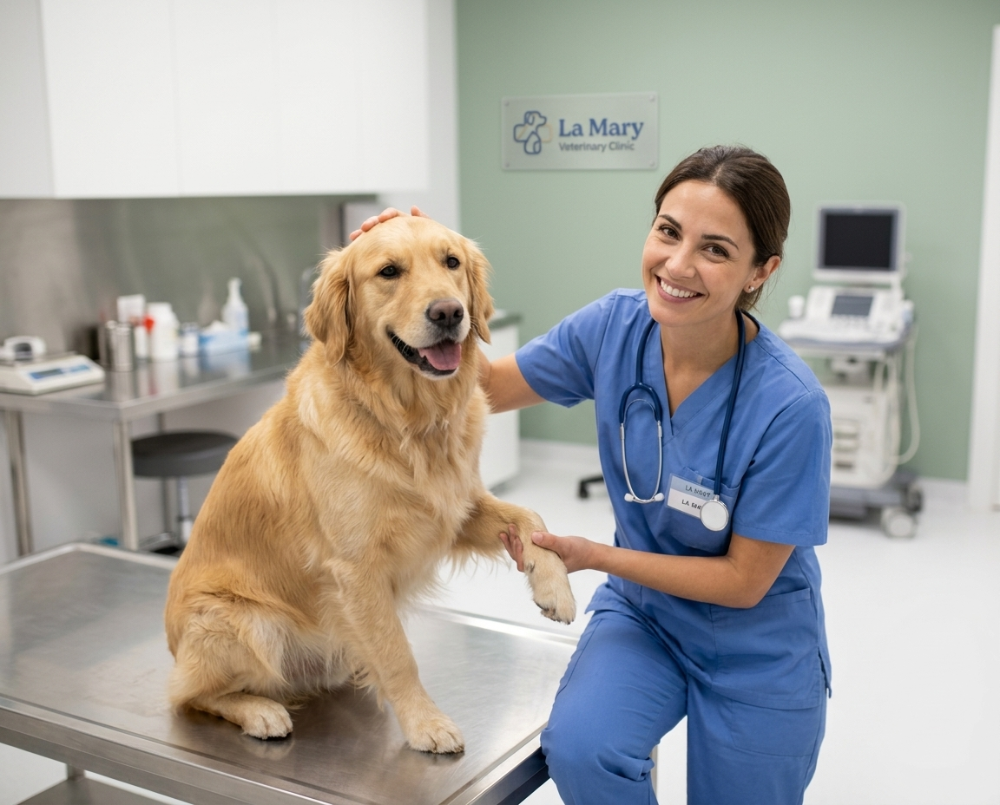

TURNOS Y URGENCIAS 24 H
Cuidamos a los que te esperan en casa
Consultas, vacunación y cirugía en un lugar tranquilo, con un paciente por turno y tiempo para explicarte cada paso.
M
TURNOS Y URGENCIAS 24 H
Consultas, vacunación y cirugía en un lugar tranquilo, con un paciente por turno y tiempo para explicarte cada paso.

Los turnos se dan cada 30 minutos. Para una urgencia no hace falta turno.
| Día | Mañana | Tarde |
|---|---|---|
| Lunes a viernes | 08:00 a 13:00 | 16:00 a 20:00 |
| Sábados | 09:00 a 12:00 | Cerrado |
| Urgencias | 24hs | 24hs |